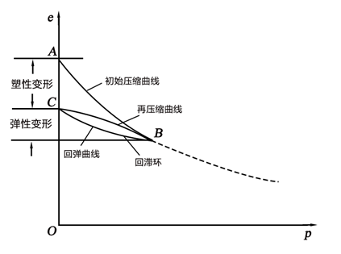
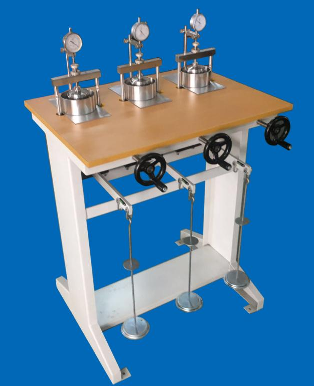
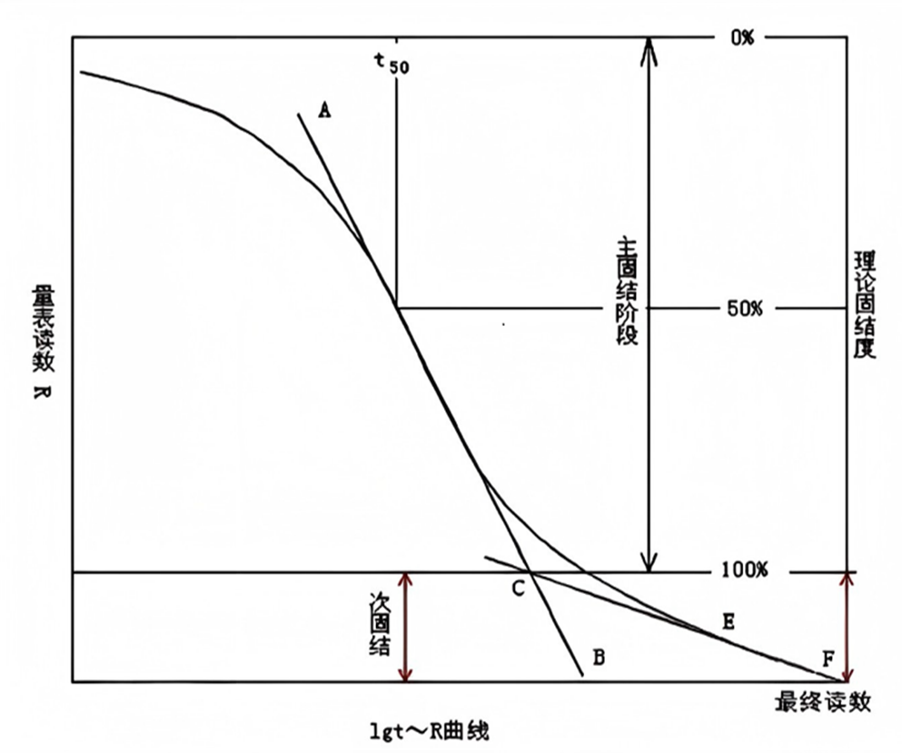
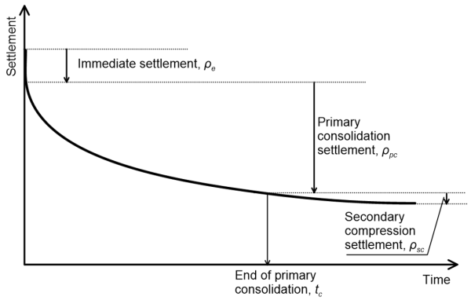

4.1 概述
土的压缩性是指土在压力作用下体积缩小的特性，地基沉降是建筑物荷载引起的地基表面下沉现象。
4.1.1 地基沉降的原因
- 瞬时沉降：加载后立即发生的沉降，由土的弹性变形引起
- 固结沉降：由于孔隙水压力消散、有效应力增加而引起的沉降
- 次固结沉降：在有效应力基本不变的情况下，由土颗粒骨架蠕变引起的沉降
4.1.2 地基沉降计算的目的
- 确定建筑物的总沉降量
- 计算沉降差和倾斜
- 预测沉降随时间的发展
- 验证地基设计的合理性
4.2 土的压缩性指标
4.2.1 压缩试验与压缩曲线
通过室内侧限压缩试验（固结试验）可以测定土的压缩性指标。试验得到的孔隙比e与压力p的关系曲线称为压缩曲线。

图4.1 压缩曲线示意图

图4.2 固结仪试验示意图
4.2.2 压缩系数
压缩系数a是评价土压缩性的重要指标：
a = (e1 - e2)/(p2 - p1)
其中：
- e1, e2：压力p1, p2作用下的孔隙比
工程上常用a1-2（p1=100kPa，p2=200kPa时的压缩系数）评价土的压缩性：
- a1-2 < 0.1MPa⁻¹：低压缩性土
- 0.1MPa⁻¹ ≤ a1-2 < 0.5MPa⁻¹：中压缩性土
- a1-2 ≥ 0.5MPa⁻¹：高压缩性土
4.2.3 压缩模量
压缩模量Es是指土在侧限条件下竖向应力与竖向应变的比值：
Es = (1+e1)/a
其中：
- e1：初始孔隙比
- a：压缩系数
4.2.4 体积压缩系数
体积压缩系数mv是指单位体积应变所需的压力增量：
mv = a/(1+e1)
4.2.5 回弹指数与再压缩曲线
土在卸载和再加载过程中表现出弹性变形特性，卸载曲线与再加载曲线围成的区域称为滞回环。回弹指数Cs通常小于压缩指数Cc。
注意
土的压缩性指标受土的种类、结构、应力历史等多种因素影响。
4.3 地基最终沉降量计算
4.3.1 分层总和法
分层总和法是计算地基最终沉降量的基本方法，其基本原理是将地基土分层，分别计算各层土的压缩量，然后求和。
s = Σ(Δsi) = Σ[(e1i - e2i)/(1+e1i)] · hi = Σ[ai/(1+e1i)] · Δpi · hi = Σ[mi · Δpi · hi]
其中：
- e1i, e2i：第i层土在平均附加应力作用前后的孔隙比
- ai：第i层土的压缩系数
- mi：第i层土的体积压缩系数
- Δpi：第i层土的平均附加应力
- hi：第i层土的厚度

图4.3 地基固结沉降示意图
4.3.2 《建筑地基基础设计规范》方法
《建筑地基基础设计规范》（GB 50007-2011）推荐的地基最终沉降量计算公式：
s = ψs · Σ[pi/(Es,i)] · z_i α_i - z_{i-1} α_{i-1}
其中：
- ψs：沉降计算经验系数
- pi：基础底面处的附加压力
- Es,i：第i层土的压缩模量
- z_i, z_{i-1}：基础底面至第i层和第i-1层底面的距离
- α_i, α_{i-1}：平均附加应力系数
4.3.3 应力历史对沉降的影响
考虑土的应力历史，需要区分：
- 正常固结土：前期固结压力pc等于现有覆盖压力p0
- 超固结土：前期固结压力pc大于现有覆盖压力p0
- 欠固结土：前期固结压力pc小于现有覆盖压力p0
4.3.4 计算步骤
- 绘制地基剖面图，确定各层土的压缩性指标
- 计算基底附加压力
- 计算地基中的附加应力分布
- 按压缩性指标相似的原则分层
- 计算各层土的压缩量
- 求和得到总沉降量
4.4 地基沉降与时间的关系
4.4.1 太沙基一维固结理论
太沙基一维固结理论假设土是均质、饱和的，在侧限条件下发生压缩，孔隙水的渗流符合达西定律。
∂u/∂t = cv ∂²u/∂z²
其中：
- u：孔隙水压力
- t：时间
- cv：固结系数（m²/s）
- z：深度
4.4.2 固结度计算
固结度U是指某一时刻的沉降量与最终沉降量的比值：
U = s_t / s
对于竖向排水情况，固结度也可以表示为：
U = 1 - (8/π²) Σ[1/(2n+1)²] exp[-(2n+1)² π² Tv/4]
其中：
- Tv：时间因数，Tv = cv t / H²
- H：最大排水距离
4.4.3 时间因数与固结度的关系
当Tv > 0.1时，可采用简化公式计算固结度：
U = 1 - exp(-π² Tv/4)
4.4.4 地基沉降时间曲线
地基沉降时间曲线通常分为三个阶段：
- 初始阶段：沉降速率较快
- 主固结阶段：沉降随时间近似线性增长
- 次固结阶段：沉降速率减缓

图4.4 沉降时间曲线示意图
知识拓展
对于大型工程，也可以通过现场监测数据反演固结参数，预测后期沉降。
4.5 建筑物沉降观测与控制
4.5.1 沉降观测的目的
- 验证设计计算的正确性
- 及时发现异常沉降
- 指导施工和使用
- 为地基处理提供依据
4.5.2 沉降观测点的布置
沉降观测点的布置应考虑：
- 建筑物的体型和结构特点
- 荷载分布情况
- 地质条件
- 施工和使用过程中的监测需要
4.5.3 沉降允许值
《建筑地基基础设计规范》规定了不同类型建筑物的沉降允许值，包括：
- 建筑物的整体沉降
- 相邻柱基的沉降差
- 基础的倾斜
- 局部倾斜
4.5.4 减少地基沉降的措施
- 地基处理：采用压实、换填、强夯等方法
- 调整基础形式：采用桩基础、箱形基础等
- 合理安排施工顺序：先施工荷载大的部分
- 设置沉降缝：将建筑物分成若干独立单元
- 预留沉降量：在设计中考虑预期沉降
本章小结
- 土的压缩性指标包括压缩系数、压缩模量、体积压缩系数等
- 地基最终沉降量计算方法主要有分层总和法和规范推荐方法
- 太沙基一维固结理论可用于计算地基沉降随时间的发展
- 地基沉降观测是确保建筑物安全的重要手段
- 可通过多种措施减少地基沉降对建筑物的影响